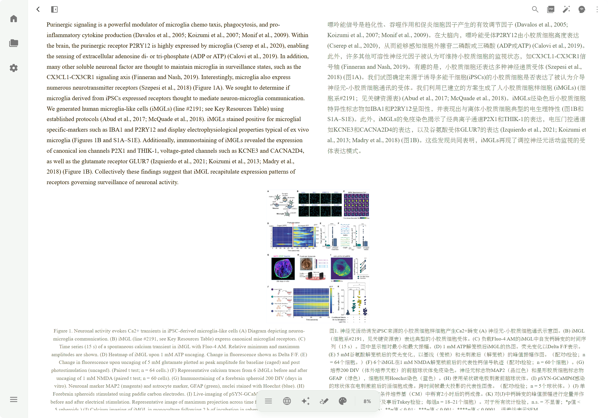
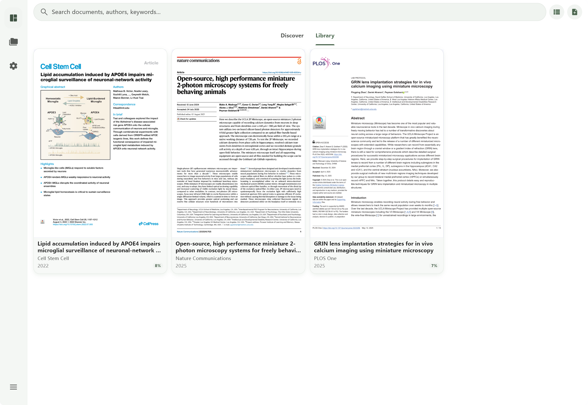
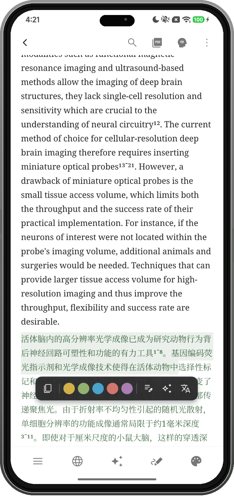
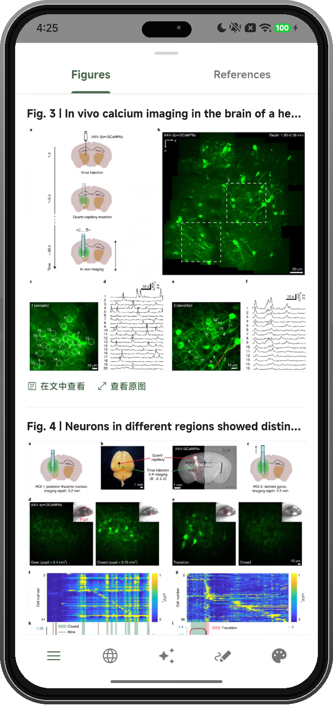
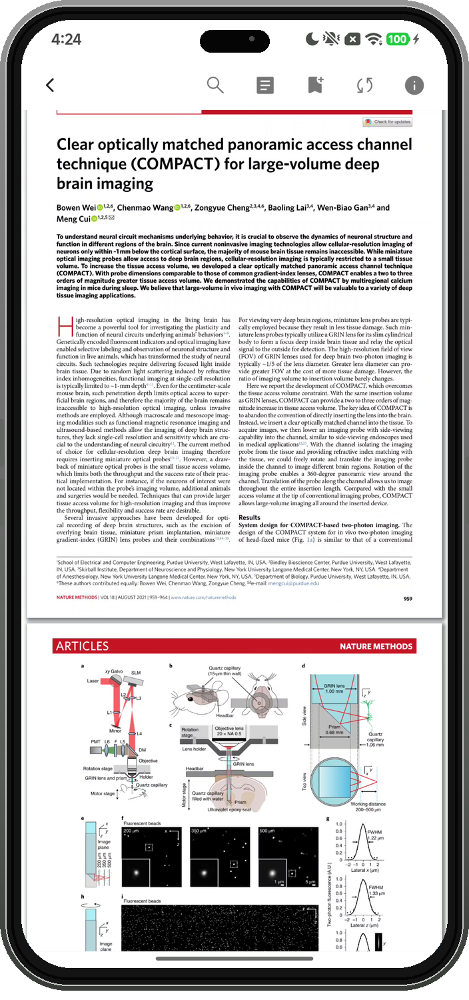

A home for your academic reading
A little closer
to the paper.
Turn a dense PDF into a paper you can settle into. Reflow, translation, figures, and answers, together in one reading space.
Android · Windows · macOS



Read comfortably
Reflow complex layouts, compare translations, and set the type and theme to suit you.
Stay with the paper
Open a figure and ask questions with the full text in context. Return to the source to check.
Keep things together
Search, organize, sync with Zotero, and back up the papers you want to keep.
Reading & understanding
A whole paper. A smaller screen.
From a two-column PDF to a continuous page. Keep the figures, translation, and questions close to what you are reading.

Reflow for smaller screens
Use PaddleOCR or MinerU to turn paragraphs, formulas, and figures into a continuous reading view.

Figures & tables
Open, zoom, copy, and share extracted figures. See the details, then return to the text.

Return to the original
Keep the original pages and layout. Return to the PDF to check formulas, citations, or context.
Based on actual app screenshots, with colors adapted to the website theme. The interface may vary by version.
Library & workflow
What you have read. What comes next.
Find a paper. Keep it in order.
Search across sources, resolve metadata, and organize your library with categories, tags, and AI file naming.
Connect your existing library
Import a local Zotero library or use two-way sync to keep your existing workflow.
Back up to your own storage
Connect S3 or WebDAV to back up and restore your data, with optional automatic backups.
Ask with the paper in context
Ask about extracted text and figures, or translate a paragraph. Connect OpenAI, Anthropic, Google, or a compatible provider.
Papers are stored locally. OCR, translation, and AI chat use your configured services. Sync and backups require separate setup.
Services & data ↗Getting started
Start with your next paper.
Choose the package for your device. Source code and release notes are available on GitHub.
The macOS build is for Apple silicon and is unsigned. Allow it in Privacy & Security on first launch. Linux is not supported yet. Installation ↗